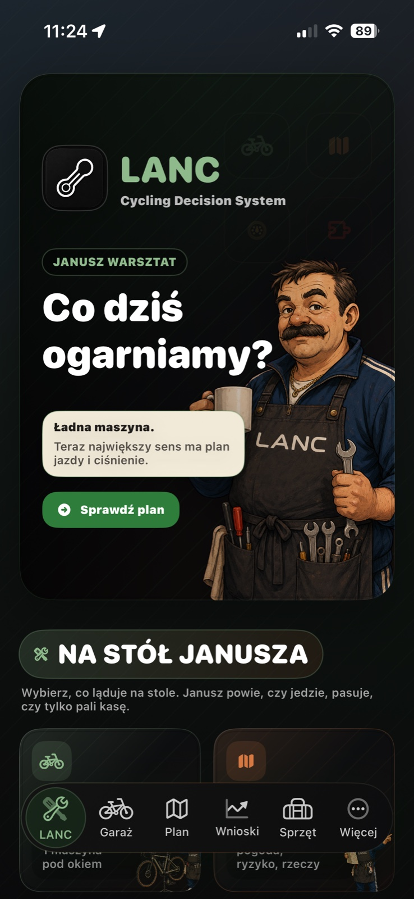
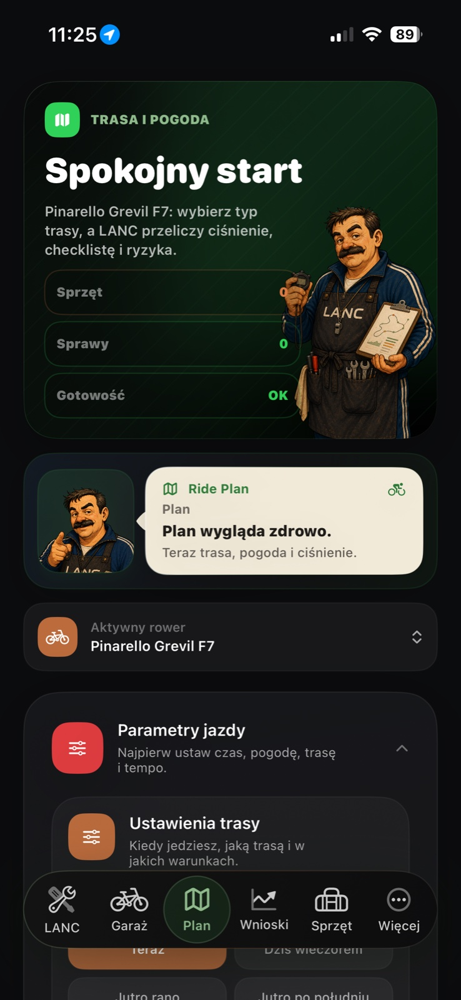
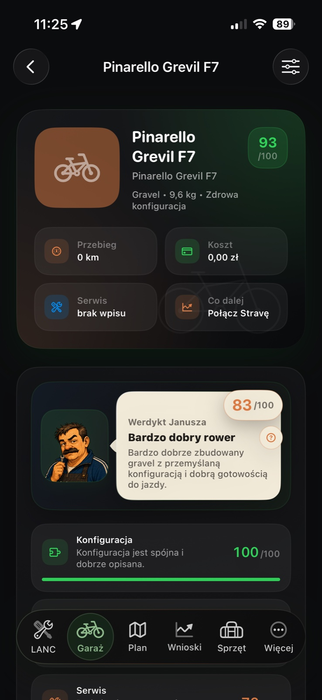
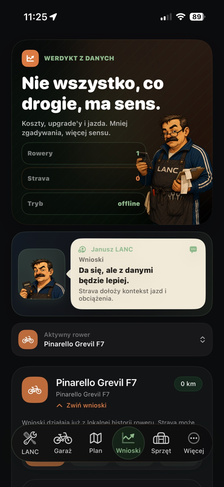
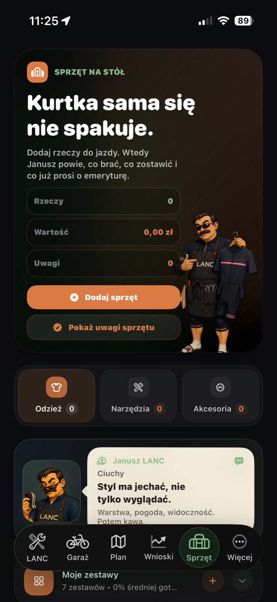

Is this setup healthy?
Janusz scores the bike and explains what is solid, missing or worth checking next.
LANC 2.0 is live on the App Store
Cycling Decision System for bikes, rides and gear.
LANC 2.0 puts Janusz in the middle of the cockpit: he reads the garage, checks the bike, guides the ride plan, watches the gear and turns loose data into decisions you can actually use.

Version 2.0 available now
Download the new LANC and let Janusz help with bike verdicts, route choices, pressure, gear and the small decisions that used to live in notes.
Opens the LANC listing in the App Store.
Janusz is the new center
He brings the bike, route, weather, costs, upgrades and gear into one practical conversation. Less digging through screens. More: here is what matters before the ride.
Janusz scores the bike and explains what is solid, missing or worth checking next.
Route type, weather and pressure become a simple pre-ride decision.
Local history already works. Strava adds ride context when you want it.
Put gear on the table and Janusz tells you what rides, what stays and what is tired.
On Janusz's table
Bike, route, weather, pressure, clothing, tools, accessories, service and costs. LANC 2.0 turns scattered cycling details into one decision layer before the ride.
Plain language, a little character and practical advice. No spreadsheet theater when you just want to ride.
The new version is built around real moments from riding: before you leave, while you maintain the bike and when you decide what actually helped.

01 / Route and weather
Pick the ride type and conditions. LANC turns pressure, checklist and risk into something you can act on.

02 / Bike verdict
Janusz explains the bike condition in human terms: build quality, service, costs and what is next.

03 / Data verdict
Costs, upgrades and riding context stop being loose facts and start becoming a decision.

04 / Gear table
Clothes, tools and accessories get a purpose: what to take, what to leave and what needs attention.
The old garage is still here. The difference is that Janusz now connects it with decisions.
Components, wheelsets, service, costs and readiness sit together in one bike story.
Weather, route, pressure and gear become one calm preparation flow.
Local history works on its own. Strava can add deeper ride context when connected.
Clothing, tools, accessories, batteries and consumables become part of the ride decision.
Short verdicts, practical language and enough personality to make the app feel alive.
LANC keeps core decisions local and makes external connections optional.
Janusz Workshop, bike verdicts, ride plan, insights and gear in the new production version.
LANC 2.0 is ready
Download the new LANC, choose the bike, set the ride and let Janusz turn the chaos into a verdict before you clip in.
Get LANC 2.0 on the App Store